01. The brief
The brief behind the brief.
The CEO wanted the app to look modern. Underneath that, Nami's product team was about to add real depth to the derivatives experience. The visual refresh was the surface layer.
Coming onto the futures surfaces
- Cross Futures
- Partial close
- DCA
- Funding Rate
- Portfolio statistics
- Trading Rules
- Fee discount tokens
How might the futures surfaces absorb a maturing product without breaking the muscle memory of traders already using it?
I didn't frame the work this way at the time. I took the brief and went straight to the canvas. Today, I would walk back from the brief to the product roadmap first.
02. Research
Mature exchanges solve density with hierarchy.
I studied six exchanges side by side. Four patterns held across all of them.
#Competitor teardown
- Binance
- OKX
- Bybit
- MEXC
- KuCoin
- BingX
01.
Density was solved by hierarchy, not minimalism.
They didn't reduce the data. They encoded a hierarchy so the eye knew where to land.
02.
Color carried meaning that never broke.
Green and red for direction, yellow for warning, neutral grays for resting state. Same hue, same meaning, every surface.
03.
Position cards led with PnL and exit prices.
Live, decision-driving information at the top; reference data below.
04.
Order history was a record of decisions, not data.
Closed orders looked different by reason. A take profit close didn't look like a liquidation.
03. The before
Reading the before with hindsight.
Three things were breaking down. I can name them now, even though I couldn't put all of it into words as a junior.


-
Every stat looked equally important
Eight data points in a flat grid. Scanning a list of positions meant eight reads per card.
-
Every closed order looked the same
A take profit, a liquidation and a DCA event were identical rows. The list stored trades; it didn't help traders learn from them.
-
No room for what was coming
Funding Rate and Trading Rules had no home. The page sat as a tab under “VNDC” with no Futures identity.
04. Design
Three themes behind the craft work.
Three moves, one per breakdown: give what traders watch the space, let every closed order tell its story, and make room for Funding Rate.
- 1Elevate what traders watchLead with PnL and exits; let traders pick density.
- 2One detail screen, every lifecycleName how each order ended and what changed along the way.
- 3Make room for Funding RateTeach a new concept in layers, outside the order form.
Solution 1
Elevate what traders watch.
What traders watch got the space. What they only reference moved below, and traders choose how much they see.
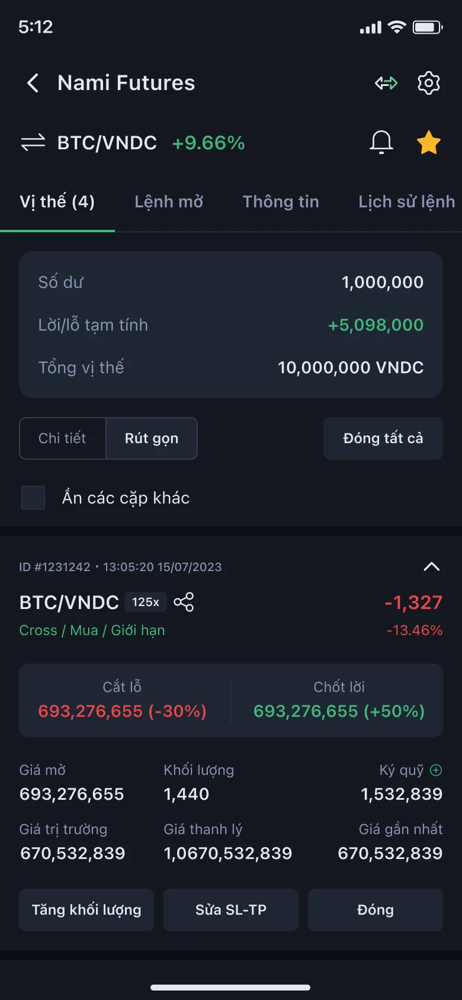
-
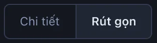
Added a density toggle: Rút gọn by default, Chi tiết to expand everything, plus a chevron on each card.
-
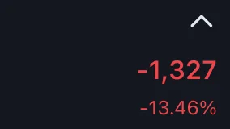
PnL became the largest element, coloured at a size that reads instantly.
-
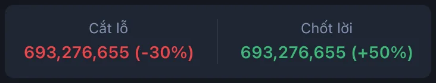
Stop loss and take profit moved into their own block, with price and % from entry.
-
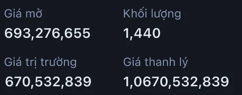
The other six stats compressed into a smaller three-column grid.
🔁 Before and after
The same Positions tab, before and after. The old card gave all eight stats the same weight. The new one leads with PnL and the exit prices, then compresses the rest into a reference grid.
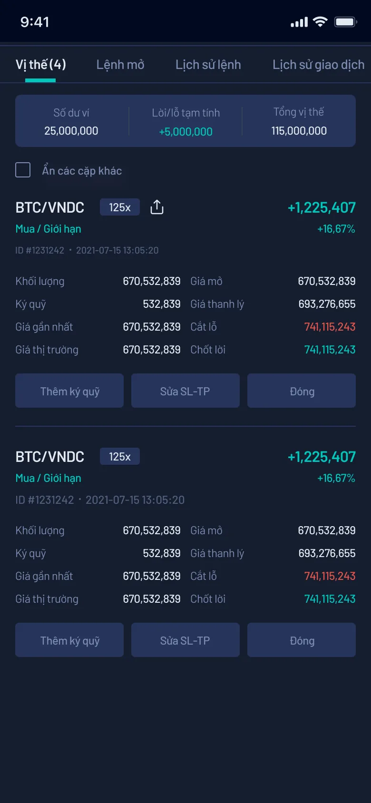
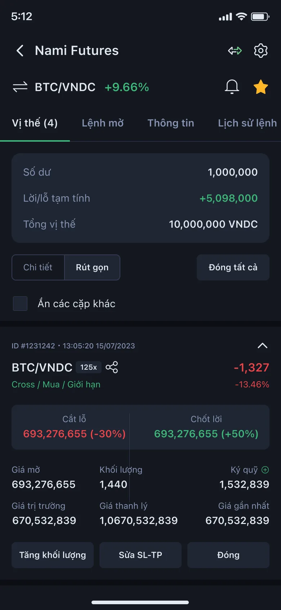
What changed on the card:
PnL and the exit prices now lead; the other six stats became reference.
Density toggle
Rút gọn by default, one tap to open a single card, Chi tiết to expand every position.
PrincipleTraders care about how they're doing now and where they're getting out. Everything else is reference. Reorder by attention, and let traders choose density.
Solution 2
One detail screen, every lifecycle.
A futures order has a life, and each ending means something different. The detail screen now tells that story.
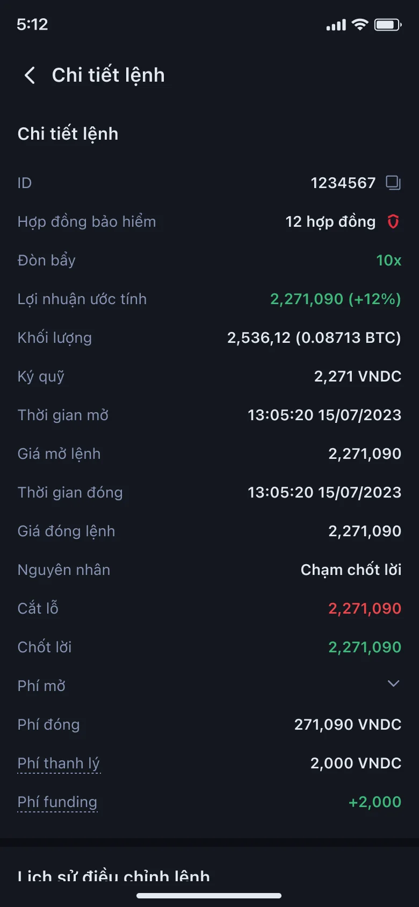
-
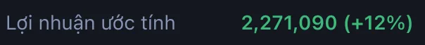
The outcome reads first: estimated PnL in green for a take profit, red for a stop loss.
-
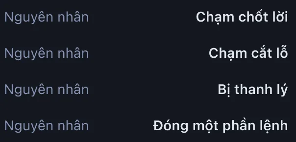
A Nguyên nhân (Cause) field names how the order ended: take profit, stop loss, liquidation or partial close.
-
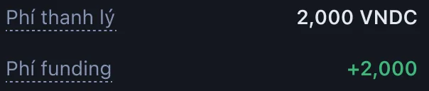
A liquidation surfaces the liquidation fee; funding paid or earned sits alongside.
-
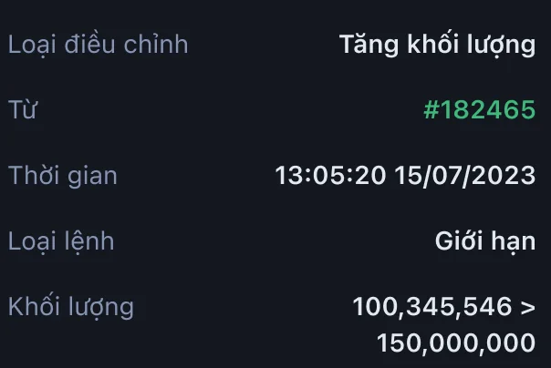
Lịch sử điều chỉnh lệnh: every DCA, SL/TP or margin change as a colour-coded before → after row.
PrincipleThe detail screen should answer the question a trader has when they open a closed order: what happened to this trade, and what did I do about it?
Solution 3
Make room for Funding Rate.
Funding Rate was new to most Nami traders. The design teaches it in layers, without crowding the order form.
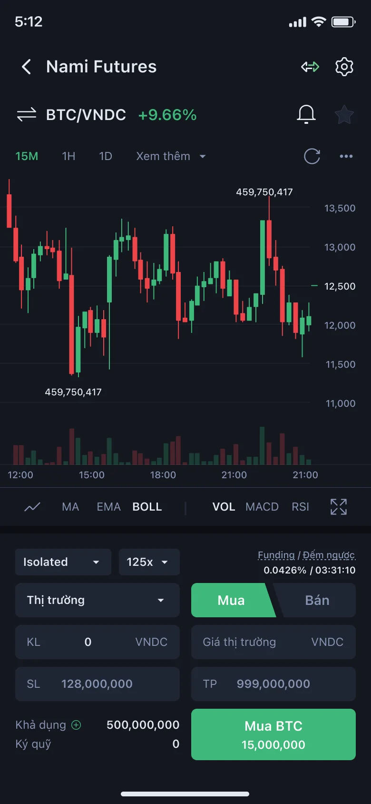
-
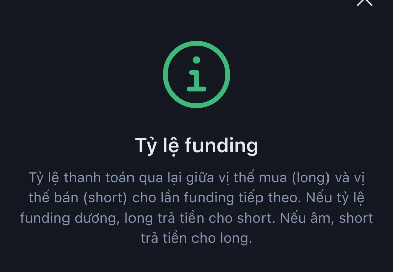
One tap opens a plain-language explanation of who pays whom.
-
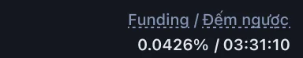
A thin persistent row shows the current rate and the countdown to the next funding.
-
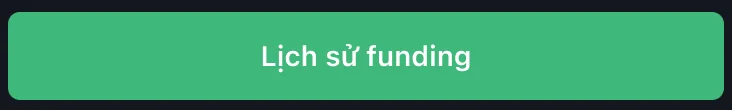
The sheet links to funding history, which closes the loop.
-
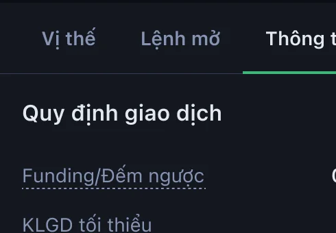
The Thông tin tab lists Funding beside the contract's other trading rules.
PrincipleVisibility teaches awareness. The modal teaches understanding. The history closes the loop.
05. Reflection
What I'd do differently.
-
Reframe the brief
“The app looks outdated” was a trigger, not a problem. Today I'd ask which surfaces are being changed by which features, and let that shape what gets redesigned.
-
Add real user research
Competitor analysis isn't user research. I'd talk to Nami traders, mine support tickets and instrument the funnel before touching a screen.
-
Commit to a metric
I shipped with no baseline and no target. Today I'd pick one, such as time-to-first-trade, order-entry completion or position management session length, and check it after.
This project taught me how to design for a product that is maturing underneath the surface I'm working on. What I'd add today is designing for outcomes, not just outputs.